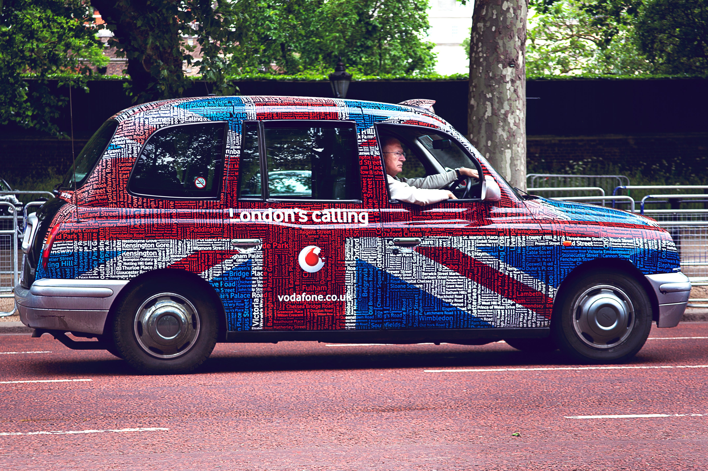
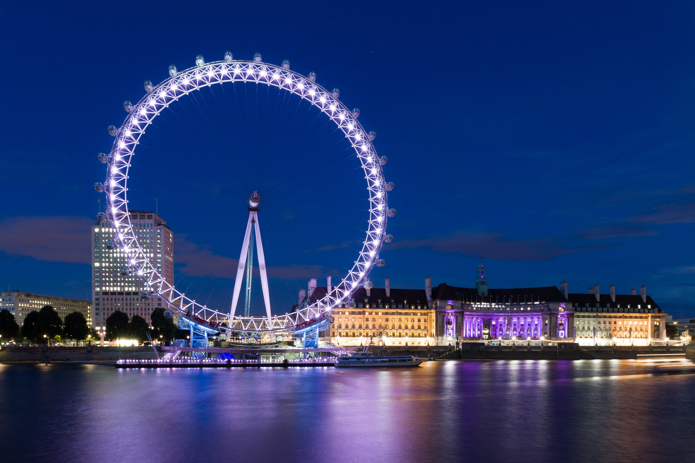
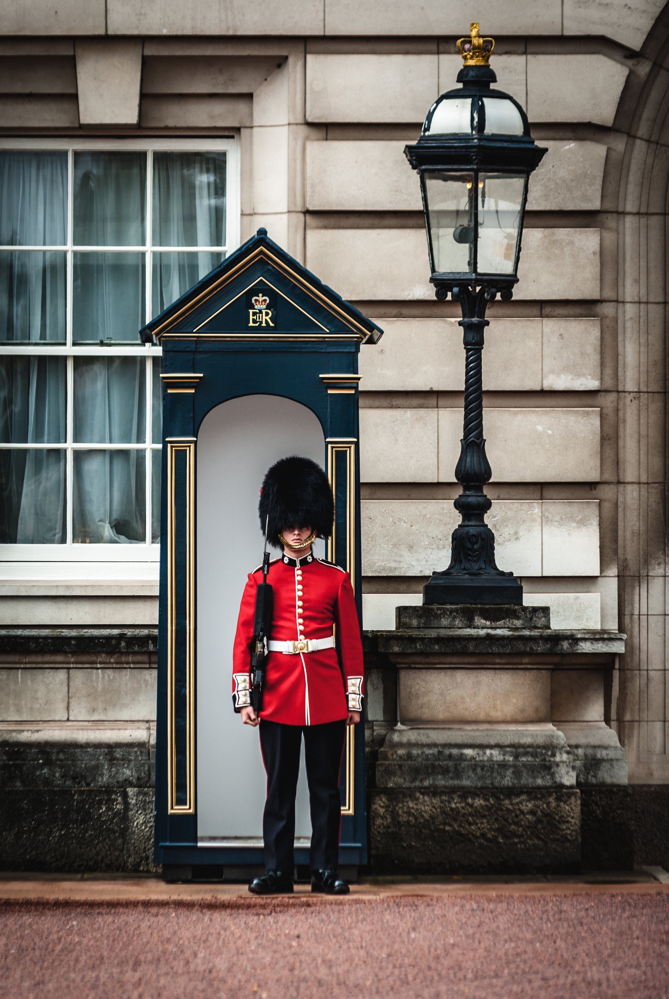

London
Présentation
Londres, une métropole cosmopolite où l'ancien côtoie le moderne, des ruelles médiévales de Covent Garden aux gratte-ciel scintillants de Canary Wharf, vibrant au rythme incessant de la vie urbaine.
C'est une ville où la diversité culturelle s'exprime à travers une multitude de quartiers, de Chinatown à Notting Hill, offrant une cuisine, une mode et une musique variées à chaque coin de rue.
Londres, berceau d'innovations et de découvertes, abritant des institutions académiques de renommée mondiale, des musées fascinants et des espaces verts pittoresques qui insufflent une énergie dynamique et créative à ses habitants et visiteurs.
Monuments
La Tour de Londres, une forteresse historique où résonnent les échos des intrigues royales, des tragédies et des légendes, gardienne des joyaux de la Couronne britannique depuis des siècles.
Le Palais de Westminster, symbole emblématique de la démocratie britannique, où siègent le Parlement et Big Ben, une icône intemporelle de l'horlogerie et de l'architecture londonienne.
La Cathédrale Saint-Paul, majestueux édifice baroque dominant le skyline de Londres, témoin des grands événements de l'histoire britannique et lieu de célébration des moments les plus marquants de la vie nationale.
Histoire
Londres, une ville qui puise ses racines dans l'Antiquité romaine, a évolué pour devenir le cœur battant de l'Empire britannique, un centre financier mondial et un carrefour culturel d'une richesse inégalée.
Des conflits historiques tels que la Grande Peste et le Grand Incendie ont façonné son paysage urbain, tout en témoignant de sa résilience et de sa capacité à se reconstruire.
L'histoire de Londres est marquée par des moments emblématiques, de la monarchie Tudor aux Blitz de la Seconde Guerre mondiale, qui ont forgé son caractère cosmopolite, dynamique et indéniablement fascinant.
GASC Youenn
TALEC Bastien
Jean-Marin RIBARIC